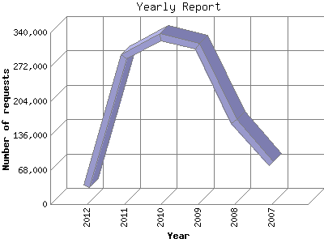

Analog 5.1
Analog 5.1 Report Magic 2.21
Report Magic 2.21The Yearly Report shows total activity on your site for each calendar year.
Remember that each page hit can result in several server requests as the images
for each page are loaded.
Note: Most likely, the first and last years
will not represent a complete year's worth of data, resulting in lower hits.

| Year | Number of requests | Number of page requests | |
|---|---|---|---|
| 1. | 2007 | 80,263 | 3,159 |
| 2. | 2008 | 163,003 | 7,207 |
| 3. | 2009 | 313,162 | 11,386 |
| 4. | 2010 | 330,365 | 12,239 |
| 5. | 2011 | 292,074 | 13,671 |
| 6. | 2012 | 34,843 | 5,916 |
Most active year 2011 : 13,671 pages sent. 330,365 requests handled.
Yearly average: 8,929 pages sent. 202,285 requests handled.
This report was generated on August 15, 2012 19:00.
Report time frame May 8, 2007 20:31 to August 15, 2012 23:58.
| Web statistics report produced by: | |
| Analog 5.1 | Report Magic 2.21 |